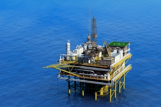

As we meander down the sidewalk, how many of us give more than a passing thought to the cement underfoot? For the most part, it’s just another flat surface, a means to an end, whether it leads us to a coffee shop, book store, or parking lot. But when it’s puckered, chipped, or crumbling, we certainly think about its need for repair.
Researchers at the National Energy Technology Laboratory (NETL) think about deteriorating cement as well, with an aim to preserving its character and protecting the environment. But they’re not looking at sidewalks. Their focus is wellbore cement, the cement encasing pipes that bring oil and gas up to the surface.
For oil and gas to remain a vital part of the nation’s energy portfolio, the infrastructure must act not only as a support system, but also as a strong barrier to keep the oil and gas out of fragile ecosystems. This is especially important in deepwater drilling operations, where, to protect the world’s oceans, cement needs to remain strong long after it is placed in the well. Problems with cement are a contributing factor leading to blowouts at deepwater oil and gas drilling rigs.
As a step toward preventing future failures, NETL researchers performed a study to determine exactly where we fall short in knowledge about the cement that lines deep and ultra-deepwater wells, which can extend more than 20,000 feet — nearly 4 miles — beneath the seafloor. The researchers compiled data from literature on the topic and pounded the pavement to collect input from a bevy of industry experts. The 6-month study culminated in a report detailing key research needs.

One finding is that more research is needed to determine how adeptly cement is placed in a well to ensure that hydrocarbons or other fluids do not leak into surrounding rock, even after years or decades of use. Tracers, which have been used to monitor movement of carbon dioxide after injection into geological formations, may well be an answer. Like paint on the bottom of a shoe marking the sidewalk, the tracers pumped into a well with the cement mark particles within the cement so researchers can study and ultimately predict its movement while it is still fluid.
The study also showed that the conditions the cement encounters in the well often do not match the conditions under which it is tested in the lab. If the conditions were more similar, researchers could hone the cement to better endure the pressure and temperatures encountered deep in the wells. Thermal modeling of the wellbore is one way to decrease the difference between simulated and real-world drilling scenarios. Working with industry to develop better models would help increase understanding of cementing and improve predictions of the impact of different designs and operational methods.
NETL’s journey down the pathway of cement research will lead to improved safety and reduced risks in deepwater and ultra-deepwater drilling, as well as in overall oil and gas development, helping to ensure the nation’s secure use of offshore oil and gas.
.jpg@itok=6bg0OmRE "Ocean surface current velocities on image of sea surface temperatures, March 29, 2015. Figure from “Real Time Observing and Forecasting of Loop Currents in 2015,” C. Cooper et al, OTC 2016.")